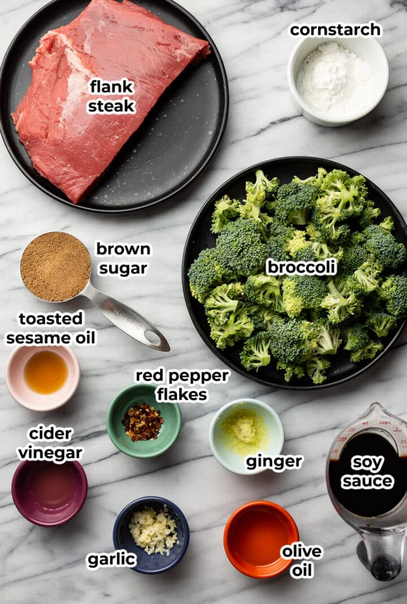
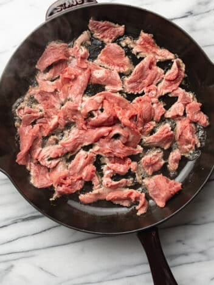
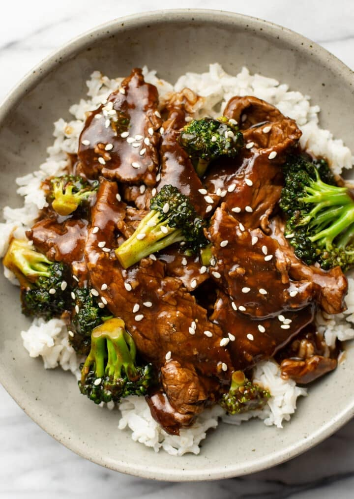

Ingredient List

- Ingredients:
- 1 pound flank steak
- 2 tablespoons olive oil, divided
- 3-4 cups broccoli florets (see note)
- Sauce Ingredients:
- 1/2 cup low-sodium soy sauce
- 1/2 cup water
- 1/2 teaspoon apple cider vinegar or rice vinegar
- 1/2 teaspoon toasted sesame oil (see note)
- 1/4 cup (packed) brown sugar
- 3 tablespoons cornstarch
- 1 teaspoon grated fresh ginger
- 4 cloves garlic, minced
- 1/4 teaspoon crushed red pepper flakes, or more to taste
Prepare and cook the beef
Cut beef into thin strips or cubes. Marinate the beef with soy sauce, cornstarch, and a touch of ginger and garlic (optional) for about 15-30 minutes. Heat oil in a wok or large skillet over high heat. Stir-fry the beef until browned and cooked through. Remove the beef from the wok and set aside.
Prepare the broccoli
Add a little more oil to the wok or skillet. Add broccoli florets and stir-fry until tender-crisp. Remove the broccoli from the wok and set aside.
Combine and create the sauce

Return the beef to the wok or skillet. Add the broccoli back in. Prepare a sauce with soy sauce, oyster sauce (optional), cornstarch slurry, and a touch of sesame oil. Pour the sauce over the beef and broccoli and stir-fry until the sauce thickens. Serve hot over rice or noodles.